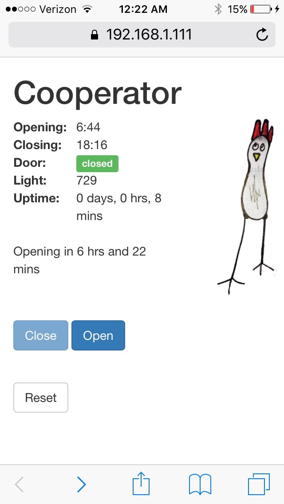
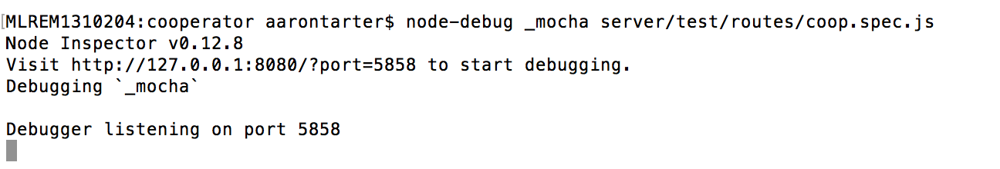
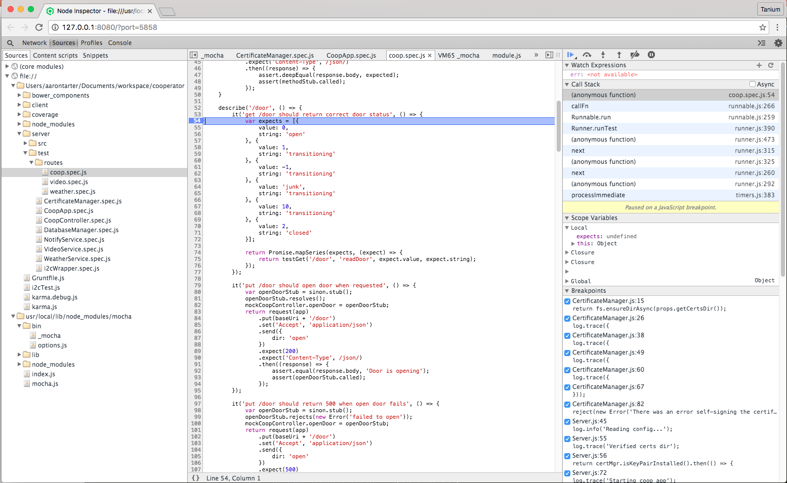

An overview and demonstration of testing the MEAN stack
Aaron Tarter ajtarter@gmail.com
"The language for web applications is JavaScript, which is a very dynamic language without static typing. There is no compiler that could catch mistakes like misspelling a variable name or calling a non existing method on an object - developers have to actually run the code to catch these issues. Therefore testing is absolutely necessary."
Vojta Jína, creator of Karma
Good news
|  |
|
There are lots of chicken predators:
| vicious raccoons | |
| ferocious opossums | |
| unbalanced humans |
Allow for easy mocking
'use strict';
var log = require('../logger.js')();
function setup(app, url, controller) {
function end(res) {
res.end();
log.trace({
res: res
}, 'Sending response');
}
app.route(url + '/door')
.get(function(req, res) {
log.trace({
req: req
}, 'Entering get ' + url + '/door');
var door = controller.readDoor();
var doorString = 'transitioning';
if (door === 0) {
doorString = 'open';
} else if (door === 2) {
doorString = 'closed';
}
log.debug({
door: door,
doorString: doorString
}, 'Read door');
res.status(200).json(doorString);
end(res);
})
.put(function(req, res) {
log.trace({
req: req,
dir: req.body.dir
}, 'Entering put ' + url + '/door');
var msg;
if (req.body.dir === 'open') {
controller.openDoor().then(() => {
var msg = 'Door is opening';
log.debug(msg);
res.status(200).json(msg);
end(res);
}).catch((err) => {
var msg = 'Error opening door';
log.error({
err: err
}, msg);
res.status(500).json(msg);
end(res);
});
} else if (req.body.dir === 'close') {
controller.closeDoor().then(() => {
var msg = 'Door is closing';
log.debug(msg);
res.status(200).json(msg);
end(res);
}).catch((err) => {
var msg = 'Error closing door';
log.error({
err: err
}, msg);
res.status(500).json(msg);
end(res);
});
} else if (req.body.dir === 'auto') {
controller.autoDoor().then(() => {
var msg = 'Door is in auto mode';
log.debug(msg);
res.status(200).json(msg);
end(res);
}).catch((err) => {
var msg = 'Error setting door to auto mode';
log.error({
err: err
}, msg);
res.status(500).json(msg);
end(res);
});
} else {
msg = 'Invalid door direction';
log.error({
dir: req.body.dir
}, msg);
res.status(422).json(msg);
end(res);
}
});
app.put(url + '/reset', function(req, res) {
log.trace({
req: req
}, 'Entering put ' + url + '/reset');
log.info('reset requested');
controller.reset().then(() => {
var msg = 'Coop is resetting';
log.info(msg);
res.status(200).json(msg);
end(res);
}).catch((err) => {
var msg = 'Error resetting coop';
log.error({
err: err
}, msg);
res.status(500).json(msg);
end(res);
});
});
app.get(url + '/temp', function(req, res) {
log.trace({
req: req
}, 'Entering get ' + url + '/temp');
var temp = controller.readTemp();
log.debug({
temp: temp
}, 'Read temp');
res.status(200).json(temp);
end(res);
});
app.get(url + '/light', function(req, res) {
log.trace({
req: req
}, 'Entering get ' + url + '/light');
var light = controller.readLight();
log.debug({
light: light
}, 'Read light');
res.status(200).json(light);
end(res);
});
app.get(url + '/uptime', function(req, res) {
log.trace({
req: req
}, 'Entering get ' + url + '/uptime');
var uptime = controller.readUptime();
log.debug({
uptime: uptime
}, 'Read uptime');
res.status(200).json(uptime);
end(res);
});
function getHourMin(minutes) {
return {
hour: Math.floor(minutes / 60),
minute: minutes % 60
};
}
app.get(url + '/closetime', function(req, res) {
log.trace({
req: req
}, 'Entering get ' + url + '/closetime');
var closingMinutes = controller.getClosingTime();
res.status(200).json(getHourMin(closingMinutes));
end(res);
});
app.get(url + '/opentime', function(req, res) {
log.trace({
req: req
}, 'Entering get ' + url + '/opentime');
var openingMinutes = controller.getOpeningTime();
res.status(200).json(getHourMin(openingMinutes));
end(res);
});
app.get(url + '/health', function(req, res) {
log.trace({
req: req
}, 'Entering get ' + url + '/rerrors');
var health = {};
health.readErrors = controller.getReadErrorCount();
health.writeErrors = controller.getWriteErrorCount();
health.autoResets = controller.getAutoResetCount();
health.lastError = controller.getLastError().toString();
health.lastRead = controller.getLastSuccessfulRead().toString();
health.lastWrite = controller.getLastSuccessfulWrite().toString();
health.longestUptime = controller.getLongestUptime().toString();
res.status(200).json(health);
end(res);
});
app.route(url + '/mode')
.get(function(req, res) {
log.trace({
req: req
}, 'Entering get ' + url + '/mode');
var mode = controller.readMode();
var modeString = 'auto';
if (mode === 1) {
modeString = 'manual';
}
log.debug({
mode: mode,
modeString: modeString
}, 'Read mode');
res.status(200).json(modeString);
end(res);
});
}
module.exports = setup;
var assert = require('assert'),
bodyParser = require('body-parser'),
express = require('express'),
request = require('supertest'),
coop = require('../../src/routes/coop');
describe('routes/coop', function() {
describe('/door', function() {
it('should return 422 when invalid direction is sent', () => {
var app = express();
app.use(bodyParser.json()); // for parsing application/json
// using supertest to make reuests to the express app
return request(app)
.put('/door')
.set('Accept', 'application/json')
.send({dir: 'invalid'})
.expect(422)
.expect('Content-Type', /json/)
.then((response) => {
assert.equal(response.body, 'Invalid door direction');
});
});
});
});
it('get /door should return correct door status', function() {
var app = express();
var readDoorStub = sinon.stub();
readDoorStub.returns(0);
coop(app, '/coop', {
readDoor: readDoorStub
});
return request(app)
.get('/coop/door')
.set('Accept', 'application/json')
.expect(200)
.expect('Content-Type', /json/)
.then((response) => {
assert.equal(response.body, 'open');
});
});
var assert = require('assert'),
sinon = require('sinon'),
WeatherService = require('../src/WeatherService.js');
describe('WeatherService', function() {
beforeEach(function() {
this.clock = sinon.useFakeTimers();
});
afterEach(function() {
this.clock = sinon.restore();
});
it('should refresh on configured period', function() {
var config = {
wundergroundApiKey: 'testkey',
state: 'NC',
city: 'Carrboro',
astronomyUpdatePeriod: 1
};
var refreshSpy = sinon.spy(WeatherService.prototype, 'refresh');
var getDataSpy = sinon.spy(WeatherService.prototype, 'getData');
var weatherService = new WeatherService(config);
assert.equal(refreshSpy.callCount, 1);
assert.equal(getDataSpy.callCount, 1);
this.clock.tick(12 * 60 * 60 * 1000 + 1);
// once immediately, and once per clock tick after that since the refresh
// perios was configured to be one ms (clock tick)
assert.equal(refreshSpy.callCount, 2);
assert.equal(getDataSpy.callCount, 2);
});
});
var assert = require('assert'),
mockery = require('mockery'),
NotifyService = require('../src/NotifyService.js');
describe('NotifyService', function() {
var config = {
mailRecipients: ['test@email.com'],
mailFrom: 'test@no-reply.com',
mailApiKey: 'testkey',
mailDomain: 'testDomain'
};
before(function() {
mockery.enable({
warnOnReplace: false,
warnOnUnRegistered: false
});
});
afterEach(function() {
mockery.deregisterAll();
});
after(function() {
mockery.disable();
});
it('notify should call mail gun service', function() {
var mailgunMock = function() {
return {
messages: function() {
return {
send: function() {
return Promise.resolve('success');
}
};
}
};
};
mockery.registerMock('mailgun-js', mailgunMock);
var notifyService = new NotifyService(config);
return notifyService.notify('Coop closed', 'Coop closed at ' + new Date());
});
});
var assert = require('assert'),
nock = require('nock'),
WeatherService = require('../src/WeatherService.js');
describe('WeatherService', function() {
it('should make reqeusts for the configured location', function() {
var config = {
wundergroundApiKey: 'testkey',
state: 'NC',
city: 'Carrboro'
};
var testSunset = {
hour: 20,
minute: 15
};
var testSunrise = {
hour: 6,
minute: 7
};
var baseUrl = 'http://api.wunderground.com';
var uri = '/api/' + config.wundergroundApiKey + '/astronomy/q/' + config.state + '/' + config.city + '.json';
var url = baseUrl + uri;
nock(baseUrl)
.get(uri)
.times(2)
.reply(200, {
sun_phase: {
sunset: testSunset,
sunrise: testSunrise
}
});
var weatherService = new WeatherService(config);
return weatherService.refresh().then(() => {
assert.deepEqual(weatherService.getSunrise(), testSunrise);
assert.deepEqual(weatherService.getSunset(), testSunset);
});
});


module.exports = function(grunt) {
grunt.loadNpmTasks('grunt-mocha-istanbul');
grunt.initConfig({
mocha_istanbul: {
server: {
src: 'server/test/**/*',
options: {
mask: '*.spec.js',
coverage: true
},
check: {
lines: 80,
statements: 80
}
}
}
});
grunt.registerTask('serverTest', 'mocha_istanbul:server');
};
angular.module(appName)
.factory('coopService', ['$http', '$log', '$interval', '$location', function($http, $log, $interval, $location) {
var baseUrl = '/coop';
var commandDoor = function(dir) {
return $http.put(baseUrl + '/door', {
dir: dir
}).then(function(response) {
return response.data;
});
};
var reset = function() {
return $http.put(baseUrl + '/reset', {}).then(function(response) {
return response.data;
});
};
var getCoopData = function(valueName) {
return $http.get(baseUrl + '/' + valueName).then(function(response) {
return response.data;
});
};
var getDoorState = function() {
return getCoopData('door');
};
var getUptime = function() {
return getCoopData('uptime');
};
var getLight = function() {
return getCoopData('light');
};
var getTemp = function() {
return getCoopData('temp');
};
var getClosingTime = function() {
return getCoopData('closetime');
};
var getOpeningTime = function() {
return getCoopData('opentime');
};
var getHealth = function() {
return getCoopData('health');
};
var getMode = function() {
return getCoopData('mode');
};
return {
commandDoor: commandDoor,
getClosingTime: getClosingTime,
getDoorState: getDoorState,
getHealth: getHealth,
getLight: getLight,
getMode: getMode,
getOpeningTime: getOpeningTime,
getTemp: getTemp,
getUptime: getUptime,
reset: reset
};
}]);
angular.module(appName)
.controller('coopController', ['$scope', '$log', '$interval', '$window',
'coopService', 'videoService',
function($scope, $log, $interval, $window, coopService, videoService) {
$scope.openTime = '?';
$scope.closeTime = '?';
$scope.doorStates = {
danger: 'danger',
ok: 'ok',
transitioning: 'transitioning',
error: 'error',
unknown: 'unknown'
};
$scope.doorState = 'unknown';
$scope.mode = 'unknown';
$scope.doorHealth = $scope.doorStates.unknown;
$scope.uptime = '?';
$scope.nextOpMessage = '';
$scope.readErrors = '?';
$scope.writeErrors = '?';
$scope.autoResets = '?';
$scope.lastError = '?';
$scope.lastRead = '?';
$scope.lastWrite = '?';
$scope.unhealthy = false;
$scope.resetActive = false;
$scope.closeActive = false;
$scope.openActive = false;
var computeNextOpMessage = function() {
if ($scope.openTime !== '?' && $scope.closeTime !== '?' && $scope.doorState !== 'unknown') {
var currentTime = new Date();
var currentMinutes = currentTime.getHours() * 60 + currentTime.getMinutes();
var closeMinutes = $scope.closeTime.hour * 60 + $scope.closeTime.minute;
var openMinutes = $scope.openTime.hour * 60 + $scope.openTime.minute;
var deltaHours;
var deltaMins;
if ($scope.doorState === 'closed') {
if (currentMinutes <= openMinutes || currentMinutes >= closeMinutes) {
$scope.doorHealth = $scope.doorStates.ok;
if (currentTime.getHours() < $scope.closeTime.hour) {
// morning time
deltaHours = Math.floor((openMinutes - currentMinutes) / 60);
deltaMins = (openMinutes - currentMinutes) % 60;
} else {
// night time
deltaHours = Math.floor((24 * 60 - currentMinutes + openMinutes) / 60);
deltaMins = (24 * 60 - currentMinutes + openMinutes) % 60;
}
$scope.nextOpMessage = 'Opening in ' + deltaHours + ' hrs and ' + deltaMins + ' mins';
} else {
$scope.doorHealth = $scope.doorStates.danger;
$scope.nextOpMessage = 'Door failed to open when scheduled';
}
} else if ($scope.doorState === 'open') {
if (currentMinutes >= openMinutes && currentMinutes <= closeMinutes) {
$scope.doorHealth = $scope.doorStates.ok;
deltaHours = Math.floor((closeMinutes - currentMinutes) / 60);
deltaMins = (closeMinutes - currentMinutes) % 60;
$scope.nextOpMessage = 'Closing in ' + deltaHours + ' hrs and ' + deltaMins + ' mins';
} else {
// this is really bad!! The coop door is open and its past closing
// CHICKENS MAY DIE !!!!!!
$scope.doorHealth = $scope.doorStates.danger;
$scope.nextOpMessage = 'Door failed to close when scheduled!!';
}
} else {
$scope.doorHealth = $scope.doorStates.transitioning;
$scope.nextOpMessage = 'Door is transitioning';
}
}
};
var update = function() {
coopService.getClosingTime().then(function(closeTime) {
$scope.closeTime = closeTime;
computeNextOpMessage();
}, function(err) {
$log.error('Error getting closing time, err: ', err);
$scope.closeTime = 'error';
});
coopService.getOpeningTime().then(function(openTime) {
$scope.openTime = openTime;
computeNextOpMessage();
}, function(err) {
$log.error('Error getting opening time, err: ', err);
$scope.openTime = 'error';
});
coopService.getDoorState().then(function(doorState) {
$scope.doorState = doorState;
computeNextOpMessage();
}, function(err) {
$log.error('Error getting door state, err: ', err);
$scope.doorState = 'error';
});
coopService.getUptime().then(function(uptime) {
var days = Math.floor(uptime / (24 * 3600 * 1000));
var hours = Math.floor((uptime / (3600 * 1000)) % 24);
var minutes = Math.floor((uptime / (60 * 1000)) % 60);
$scope.uptime = days + ' days, ' + hours + ' hrs, ' + minutes + ' mins';
}, function(err) {
$log.error('Error getting uptime, err: ', err);
$scope.uptime = 'error';
});
coopService.getMode().then(function(mode) {
$scope.mode = mode;
}, function(err) {
$log.error('Error getting mode, err: ', err);
$scope.mode = 'error';
});
coopService.getHealth().then(function(health) {
$scope.health = health;
}, function(err) {
$log.error('Error getting health, err: ' + err);
$scope.health = 'error';
});
};
$scope.autoDoor = function() {
return coopService.commandDoor('auto').then(function() {
$log.debug('Door auto command sent successfully.');
}, function(err) {
$log.error('Error commanding door into auto mode, err: ', err);
});
};
$scope.closeDoor = function() {
$scope.closeActive = true;
$interval(function() {
$scope.closeActive = false;
}, 20000, 1);
return coopService.commandDoor('close').then(function() {
$log.debug('Door close command sent successfully.');
}, function(err) {
$log.error('Error commanding door ito close, err: ', err);
});
};
$scope.openDoor = function() {
$scope.openActive = true;
$interval(function() {
$scope.openActive = false;
}, 20000, 1);
return coopService.commandDoor('open').then(function() {
$log.debug('Door open command sent successfully.');
}, function(err) {
$log.error('Error commanding door ito open, err: ', err);
});
};
$scope.reset = function() {
$scope.resetActive = true;
$interval(function() {
$scope.resetActive = false;
}, 20000, 1);
return coopService.reset().then(function() {
update();
}, function(err) {
$log.error('Error resetting coop, err: ', err);
});
};
$scope.panVideo = function(dir) {
return videoService.pan(dir);
};
$scope.goToVideoPreset = function(preset) {
return videoService.goToPreset(preset);
};
$scope.setIR = function(ir) {
return videoService.setIR(ir);
};
var displayTime = function(time) {
if (time === '?') {
return time;
}
var d = new Date();
d.setHours(time.hour);
d.setMinutes(time.minute);
d.setSeconds(0);
return d.toLocaleTimeString($window.navigator.language, {
hour: '2-digit',
minute: '2-digit'
});
};
$scope.displayCloseTime = function() {
return displayTime($scope.closeTime);
};
$scope.displayOpenTime = function() {
return displayTime($scope.openTime);
};
update();
$interval(update, 5000);
}
]);
describe('coopService test', function() {
var assert = chai.assert;
var coopServiceInstance;
var httpBackend, interval, location;
var moduleName = 'coopApp';
var baseUrl = '/coop';
var serviceName = 'coopService';
beforeEach(function() {
module(moduleName);
});
beforeEach(inject(function($httpBackend, $injector) {
httpBackend = $httpBackend;
coopServiceInstance = $injector.get(serviceName);
}));
var statusTests = [{
url: '/door',
method: 'getDoorState',
value: 'closed'
}, {
url: '/health',
method: 'getHealth',
value: {
readErrors: 2
}
}, {
url: '/uptime',
method: 'getUptime',
value: 1234531317
}, {
url: '/closetime',
method: 'getClosingTime',
value: {
hour: 18,
minute: 54
}
}, {
url: '/opentime',
method: 'getOpeningTime',
value: {
hour: 6,
minute: 54
}
}, {
url: '/mode',
method: 'getMode',
value: 'auto'
}, {
url: '/temp',
method: 'getTemp',
value: 45
}, {
url: '/light',
method: 'getLight',
value: 795
}];
statusTests.forEach(function(statusTest) {
it('should return ' + statusTest.url + ' status', function(done) {
httpBackend.expectGET(baseUrl + statusTest.url).respond(200, statusTest.value);
coopServiceInstance[statusTest.method]().then(function(content) {
assert.deepEqual(statusTest.value, content);
done();
}, done);
httpBackend.flush();
});
});
statusTests.forEach(function(statusTest) {
it('should handle error on ' + statusTest.url + ' status', function(done) {
httpBackend.expectGET(baseUrl + statusTest.url).respond(500, statusTest.value);
coopServiceInstance[statusTest.method]().then(function(content) {
// we expect an error to be returned
assert.fail();
done(new Error('should have thrown error'));
}, function(err) {
assert(err);
done();
});
httpBackend.flush();
});
});
it('should properly command door', function(done) {
var dirToTest = 'close';
httpBackend.expectPUT(baseUrl + '/door', {
dir: dirToTest
}).respond(200);
coopServiceInstance.commandDoor(dirToTest).then(function() {
done();
}, done);
httpBackend.flush();
});
it('should handle error on door command', function(done) {
var dirToTest = 'close';
httpBackend.expectPUT(baseUrl + '/door', {
dir: dirToTest
}).respond(500);
coopServiceInstance.commandDoor(dirToTest).then(function() {
// we should have failed
assert.fail();
done(new Error('should have thrown error'));
}, function(err) {
// this is expected
assert(err);
done();
});
httpBackend.flush();
});
it('should properly reset coop', function(done) {
httpBackend.expectPUT(baseUrl + '/reset', {}).respond(200);
coopServiceInstance.reset().then(function() {
done();
}, done);
httpBackend.flush();
});
it('should handle error on reset coop', function(done) {
httpBackend.expectPUT(baseUrl + '/reset', {}).respond(500);
coopServiceInstance.reset().then(function() {
assert.fail();
done(new Error('should have thrown error'));
}, function(err) {
//this is expected
assert(err);
done();
});
httpBackend.flush();
});
});
describe('coopController test', function() {
var coopController, coopService, videoService, $scope, $injector, $q, $rootScope, $interval;
var moduleName = 'coopApp';
var coopServiceName = 'coopService';
var ctrlName = 'coopController';
var testDoorStates = {
danger: 'danger',
ok: 'ok',
transitioning: 'transitioning',
error: 'error',
unknown: 'unknown'
};
beforeEach(function() {
module(moduleName);
});
beforeEach(inject(function($controller, _$q_, _$injector_, _$rootScope_, _$interval_, _coopService_, _videoService_) {
coopService = _coopService_;
videoService = _videoService_;
$injector = _$injector_;
$q = _$q_;
$rootScope = _$rootScope_;
$interval = _$interval_;
sinon.stub(coopService, 'getClosingTime', function() {
return $q.when({
hour: 18,
minute: 4
});
});
sinon.stub(coopService, 'getOpeningTime', function() {
return $q.when({
hour: 5,
minute: 43
});
});
sinon.stub(coopService, 'getDoorState', function() {
return $q.when('closed');
});
sinon.stub(coopService, 'getUptime', function() {
return $q.when(0);
});
sinon.stub(coopService, 'getMode', function() {
return $q.when('auto');
});
sinon.stub(coopService, 'getHealth', function() {
return $q.when({
readErrors: 0
});
});
$scope = {};
coopController = $controller(ctrlName, {
$scope: $scope
});
}));
it('should properly initialize', function() {
assert.equal($scope.openTime, '?');
assert.equal($scope.closeTime, '?');
assert.deepEqual($scope.doorStates, testDoorStates);
assert.equal($scope.doorState, 'unknown');
assert.equal($scope.mode, 'unknown');
assert.equal($scope.doorHealth, $scope.doorStates.unknown);
assert.equal($scope.uptime, '?');
assert.equal($scope.nextOpMessage, '');
assert.equal($scope.readErrors, '?');
assert.equal($scope.writeErrors, '?');
assert.equal($scope.autoResets, '?');
assert.equal($scope.lastError, '?');
assert.equal($scope.lastRead, '?');
assert.equal($scope.lastWrite, '?');
assert.equal($scope.unhealthy, false);
assert.equal($scope.resetActive, false);
assert.equal($scope.closeActive, false);
assert.equal($scope.openActive, false);
$rootScope.$digest();
});
it('should set door in auto mode', function(done) {
sinon.stub(coopService, 'commandDoor', function(command) {
assert.equal(command, 'auto');
return $q.when('');
});
$scope.autoDoor().then(done);
// must call digest to flush $q promises
$rootScope.$digest();
});
it('should handle error when setting door in auto mode', function(done) {
sinon.stub(coopService, 'commandDoor', function(command) {
assert.equal(command, 'auto');
return $q.reject('Error setting door in auto mode');
});
$scope.autoDoor().then(done);
// must call digest to flush $q promises
$rootScope.$digest();
});
it('should close door', function() {
sinon.stub(coopService, 'commandDoor', function(command) {
assert.equal(command, 'close');
return $q.when('');
});
assert.equal($scope.closeActive, false, 'close should not be active before requesting it');
$scope.closeDoor();
// must call digest to flush $q promises
$rootScope.$digest();
assert.equal($scope.closeActive, true, 'close should be active while it is closing');
// now flush interval to expire the 20 sec update after close
$interval.flush(25000);
assert.equal($scope.closeActive, false, 'close should not be active after it is finished');
});
it('should handle error on close door', function(done) {
sinon.stub(coopService, 'commandDoor', function(command) {
assert.equal(command, 'close');
return $q.reject('Error closing door');
});
$scope.closeDoor().then(function() {
done();
});
// must call digest to flush $q promises
$rootScope.$digest();
});
it('should open door', function() {
sinon.stub(coopService, 'commandDoor', function(command) {
assert.equal(command, 'open');
return $q.when('');
});
assert.equal($scope.openActive, false, 'open should not be active before requesting it');
$scope.openDoor();
// must call digest to flush $q promises
$rootScope.$digest();
assert.equal($scope.openActive, true, 'open should be active while it is opening');
// now flush interval to expire the 20 sec update after close
$interval.flush(25000);
assert.equal($scope.openActive, false, 'open should not be active after it is finished');
});
it('should handle error on open door', function(done) {
sinon.stub(coopService, 'commandDoor', function(command) {
assert.equal(command, 'open');
return $q.reject('Error opening door');
});
$scope.openDoor().then(function() {
done();
});
// must call digest to flush $q promises
$rootScope.$digest();
});
it('should reset coop', function() {
sinon.stub(coopService, 'reset', function() {
return $q.when('');
});
assert.equal($scope.resetActive, false, 'reset should not be active before requesting it');
$scope.reset();
// must call digest to flush $q promises
$rootScope.$digest();
assert.equal($scope.resetActive, true, 'reset should be active while it is closing');
// now flush interval to expire the 20 sec update after close
$interval.flush(25000);
assert.equal($scope.resetActive, false, 'reset should not be active after it is finished');
});
it('should handle error on reset coop', function(done) {
sinon.stub(coopService, 'reset', function() {
return $q.reject('Reset error');
});
$scope.reset().then(function() {
done();
});
// must call digest to flush $q promises
$rootScope.$digest();
});
it('should pan video', function(done) {
var testDir = 'up';
sinon.stub(videoService, 'pan', function(dir) {
assert.equal(dir, testDir);
return $q.when('');
});
$scope.panVideo(testDir).then(done);
// must call digest to flush $q promises
$rootScope.$digest();
});
it('should request video preset', function(done) {
var testPreset = 2;
sinon.stub(videoService, 'goToPreset', function(preset) {
assert.equal(preset, testPreset);
return $q.when('');
});
$scope.goToVideoPreset(testPreset).then(done);
// must call digest to flush $q promises
$rootScope.$digest();
});
it('should request video IR set', function(done) {
var testIR = 'on';
sinon.stub(videoService, 'setIR', function(ir) {
assert.equal(ir, testIR);
return $q.when('');
});
$scope.setIR(testIR).then(done);
// must call digest to flush $q promises
$rootScope.$digest();
});
it('should return display open time', function() {
var testHours = 9;
var testMins = 12;
$scope.openTime = {
hour: testHours,
minute: testMins
};
var displayTime = $scope.displayOpenTime();
var parts = displayTime.split(':');
assert.equal(parts[0], testHours, 'should display hours correctly');
assert.equal(parts[1], testMins, 'should display minutes correctly');
$scope.openTime = '?';
assert.equal($scope.displayOpenTime(), $scope.openTime, 'should pass through uninitialized time value');
});
it('should return display close time', function() {
var testHours = 5;
var testMins = 23;
$scope.closeTime = {
hour: testHours,
minute: testMins
};
var displayTime = $scope.displayCloseTime();
var parts = displayTime.split(':');
assert.equal(parts[0], testHours, 'should display hours correctly');
assert.equal(parts[1], testMins, 'should display minutes correctly');
$scope.closeTime = '?';
assert.equal($scope.displayCloseTime(), $scope.closeTime, 'should pass through uninitialized time value');
});
it('should initialize handle errors on update', function() {
// change all stub functions called by update to return an error
coopService.getClosingTime.restore();
sinon.stub(coopService, 'getClosingTime', function() {
return $q.reject('Error');
});
coopService.getOpeningTime.restore();
sinon.stub(coopService, 'getOpeningTime', function() {
return $q.reject('Error');
});
coopService.getDoorState.restore();
sinon.stub(coopService, 'getDoorState', function() {
return $q.reject('Error');
});
coopService.getUptime.restore();
sinon.stub(coopService, 'getUptime', function() {
return $q.reject('Error');
});
coopService.getMode.restore();
sinon.stub(coopService, 'getMode', function() {
return $q.reject('Error');
});
coopService.getHealth.restore();
sinon.stub(coopService, 'getHealth', function() {
return $q.reject('Error');
});
$interval.flush(6000);
assert.equal($scope.closeTime, 'error');
assert.equal($scope.openTime, 'error');
assert.equal($scope.doorState, 'error');
assert.equal($scope.uptime, 'error');
assert.equal($scope.mode, 'error');
assert.equal($scope.health, 'error');
});
function testNextOpMessage(currentState, openTime, closeTime, now, expectedMsg, expectedHealth) {
coopService.getClosingTime.restore();
sinon.stub(coopService, 'getClosingTime', function() {
return $q.when(closeTime);
});
coopService.getOpeningTime.restore();
sinon.stub(coopService, 'getOpeningTime', function() {
return $q.when(openTime);
});
coopService.getDoorState.restore();
sinon.stub(coopService, 'getDoorState', function() {
return $q.when(currentState);
});
var nowTime = new Date();
nowTime.setHours(now.hour);
nowTime.setMinutes(now.minute);
sinon.useFakeTimers(nowTime.getTime());
$rootScope.$digest();
$interval.flush(6000);
assert.equal($scope.nextOpMessage, expectedMsg);
assert.equal($scope.doorHealth, expectedHealth);
}
it('should correctly compute next op message when closed at night after scheduled closing time', function() {
var closeTime = {
hour: 20,
minute: 30
};
var openTime = {
hour: 6,
minute: 15
};
var currentTime = {
hour: 21,
minute: 0
};
testNextOpMessage('closed', openTime, closeTime, currentTime, 'Opening in 9 hrs and 15 mins', testDoorStates.ok);
});
it('should correctly compute next op message when closed in morning after scheduled closing time', function() {
var closeTime = {
hour: 20,
minute: 30
};
var openTime = {
hour: 6,
minute: 15
};
var currentTime = {
hour: 1,
minute: 10
};
testNextOpMessage('closed', openTime, closeTime, currentTime, 'Opening in 5 hrs and 5 mins', testDoorStates.ok);
});
it('should correctly compute next op message when open after scheduled opening time', function() {
var closeTime = {
hour: 20,
minute: 30
};
var openTime = {
hour: 6,
minute: 15
};
var currentTime = {
hour: 7,
minute: 20
};
testNextOpMessage('open', openTime, closeTime, currentTime, 'Closing in 13 hrs and 10 mins', testDoorStates.ok);
});
it('should indicate danger if door is still open after the scheduled closing time', function() {
var closeTime = {
hour: 20,
minute: 30
};
var openTime = {
hour: 6,
minute: 15
};
var currentTime = {
hour: 20,
minute: 50
};
testNextOpMessage('open', openTime, closeTime, currentTime, 'Door failed to close when scheduled!!', testDoorStates.danger);
});
it('should indicate transioning state in health and report last op message when transitioning', function() {
var closeTime = {
hour: 20,
minute: 30
};
var openTime = {
hour: 6,
minute: 15
};
var currentTime = {
hour: 20,
minute: 30
};
testNextOpMessage('transitioning', {}, {}, currentTime, 'Door is transitioning', testDoorStates.transitioning);
});
});
describe('coopDirective test', function() {
var $scope;
var moduleName = 'coopApp';
var templateUri = '/src/views/coop-controller.html';
var templatePath = 'client' + templateUri;
var dirElement;
var testDoorStates = {
ok: 'ok',
transitioning: 'transitioning',
danger: 'danger',
unknown: 'unknown',
error: 'error'
};
beforeEach(module('templates'));
beforeEach(module(moduleName, function($controllerProvider) {
$controllerProvider.register('coopController', function($scope) {});
}));
beforeEach(inject(function($rootScope, $compile) {
$scope = $rootScope.$new();
dirElement = $compile(angular.element('
module.exports = function(config) {
config.set({
// base path that will be used to resolve all patterns (eg. files, exclude)
basePath: '',
// frameworks to use
// available frameworks: https://npmjs.org/browse/keyword/karma-adapter
frameworks: ['mocha', 'sinon', 'chai'],
// list of files / patterns to load in the browser
files: [
'client/deps/angular/angular.js',
'node_modules/angular-mocks/angular-mocks.js',
'node_modules/chai/chai.js',
'client/src/js/app.js',
'client/src/js/services/*.js',
'client/src/js/controllers/*.js',
'client/src/js/directives/*.js',
{ pattern: 'client/src/img/*.*', included: false, served: true },
'client/src/views/*.html',
'client/test/js/**/*.js'
],
// preprocess matching files before serving them to the browser
// available preprocessors: https://npmjs.org/browse/keyword/karma-preprocessor
preprocessors: {
'client/src/views/*.html': ['ng-html2js'],
'client/src/**/*.js': ['coverage']
},
ngHtml2JsPreprocessor: {
stripPrefix: 'client',
moduleName: 'templates'
},
// test results reporter to use
// possible values: 'dots', 'progress'
// available reporters: https://npmjs.org/browse/keyword/karma-reporter
reporters: ['mocha', 'progress', 'coverage'],
mochaReporter: {
output: 'autowatch'
},
coverageReporter: {
type : 'html',
include: 'client/src/**/*.js',
dir : 'coverage/',
includeAllSources: true
},
// web server port
port: 9876,
// enable / disable colors in the output (reporters and logs)
colors: true,
// level of logging
// possible values: config.LOG_DISABLE || config.LOG_ERROR || config.LOG_WARN || config.LOG_INFO || config.LOG_DEBUG
logLevel: config.LOG_INFO,
// enable / disable watching file and executing tests whenever any file changes
autoWatch: false,
// start these browsers
// available browser launchers: https://npmjs.org/browse/keyword/karma-launcher
browsers: ['PhantomJS'],
// Continuous Integration mode
// if true, Karma captures browsers, runs the tests and exits
singleRun: true,
// Concurrency level
// how many browser should be started simultaneous
concurrency: Infinity
})
}